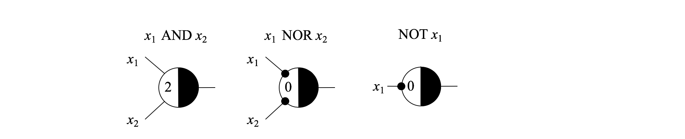

Lectura: Reconocimiento de patrones binarios usando neuronas de McCulloch-Pitts — 30:00 min
Última modificación: Marzo 10, 2022
Definición del problema
El problema real abordado por McCulloch y Pitts consistía en desarrollar un sistema de visión que permite identificar patrones binarios simples. Es decir, asociar el patrón de entrada (0, 0, 1) a 1, o el (1, 1, 1) a 0.
En términos de los datos, se tiene un conjunto de cuatro patrones binarios de entrada que deben ser reconocidos (que aparecen en la figura de abajo), donde cada patrón está conformado por tres dígitos binarios \(\{0, 1\}\). Cada patrón binario es representado como una columna con cajones, y los valores binarios están codificados con los colores blanco y gris. En este caso, el sistema de visión debe determinar el valor de los tres bits (entrada al modelo) y el cerebro debe determinar si el patrón arbitrario observado corresponde a uno de los cuatro patrones indicados (decisión).
En términos matemáticos, este problema puede ser definido como un problema de clasificación de patrones donde las entradas son todas las cadenas de tres dígitos binarios posibles, y la salida es 1 si la cadena es reconocida y 0 en caso contrario. Dicho de otra forma, los todos los patrones binarios podrían ser asignados de forma única a dos conjuntos posibles, y el modelo determina a cual conjunto {0, 1} pertenece el patrón.

En otras palabras, se desea tener un modelo matemático \(f(\) Entrada \()\) = Salida cuyas entradas y salidas están determinadas por la siguiente tabla, donde cero es blanco y uno es gris. Los patrones con salida 1 son los que deben ser reconocidos.
Entrada Salida
------------------
000 0
001 1
010 0
011 0
100 1
101 0
110 1
111 1
Solución
Modelo matemático de la neurona
El modelo de neurona de McCulloch-Pitts fue propuesto originalmente como un postulado sobre la forma en que el cerebro puede reconocer patrones complejos (parte derecha de la figura anterior). Este modelo plantea que, en general, una célula (neurona) puede representarse matemáticamente como una función no lineal que es descrita a continuación.
El modelo de la neurona se basa en una unidad genérica de cómputo que aparece en la figura de abajo. La neurona (unidad de cómputo) recibe varias entradas binarias excitatorias notadas como \(x_i\); la neurona agrega estas entradas mediante la función \(g()\), definida usualmente como (parte izquierda de la figura de abajo):
para obtener una entrada neta \(v\). Posteriormente la entrada neta \(v\) es transformada con una función no lineal \(f()\) definida como:
El valor \(\theta\) es un umbral. Así, la salida de la neurona es un dígito binario \(\{0, 1\}\) (parte central de la figura de abajo).

Por ejemplo, para el primer patrón de la tabla de la primera figura (000), la entrada neta será 0 (= 0 + 0 + 0), mientras que para el último patrón (111( será 3 (= 1 + 1 + 1). Si se tiene que parar dicha neurona el \(\theta\) es igual a 2, la salida para el patron 000, será 0 (0 < 2) y para el último 1 (3 > 2).
Adicionalmente, la neurona artificial contiene conexiones inhibitorias notadas como \(y_m\), tal que la salida siempre es cero si alguna de las entradas inhibitorias vale 1, independientemente del valor que puedan tomar las conexiones excitatorias. La representación gráfica de la neurona de McCulloch-Pitts aparece en la parte derecha de la figura anterior.
Las entradas \(x_i\) son señales exitadores, y las señales \(y_j\) son inhibidoras. La salida es cero (0) si alguna de las señales inhibidoras es uno (1). La salida es uno (1) si la suma de señales de entrada es mayor o igual que el umbral (\(\theta\)), y todas las señales inhibidoras son cero (0).
Una neurona de McCulloch-Pitts puede interpretarse como una compuerta lógica de umbral (circuito lógico) amplicamente conocida en electrónica:

Por ejemplo:
Para \(x_1\) AND \(x_2\):
x1 x2 x1 AND x2 v Umbral Salida
(deseada) v >= umbral
---------------------------------------------------
0 0 0 0 2 0
0 1 0 1 2 0
1 0 0 1 2 0
1 1 1 2 2 1
Para \(x_1\) NOR \(x_2\):
x1 x2 x1 NOR x2 v Umbral Salida
(deseada) v >= umbral
---------------------------------------------------
0 0 1 0 0 1
0 1 0 x1 es inhibitoria 0
1 0 0 x2 es inhibitoria 0
1 1 0 x1, x2 son inhibitorias 0
Ejercicio.— Calcule la salida para la siguiente red de neuronas de McCulloch-Pitts.

Rta/
Entrada Salida
-----------------
0 0 0 0
0 0 1 0
0 1 0 0
0 1 1 1
1 0 0 0
1 0 1 0
1 1 0 1
1 1 1 1
Representación del problema de clasificación como una función lógica
El problema de clasificación planteado inicialmente, puede ser resuelto mediante la construcción de una función lógica \(y=f(x_1, x_2, ..., x_n)\) definida como \(f:\{0,1\}^n \to \{0,1\}\) con: \(y \in \{0,1\}\), y \(x_i \in \{0,1\}\). En otras palabras, una función lógica es una función \(f\) que recibe como entrada una cadena de bits de tamaño \(n\) o \(\{0,1\}^n\) y devuelve un dígito binario \(\{0,1\}\). En términos del problema planteado, las entradas a la función lógica son las cadenas de bits observadas y la salida en un número binario que indica que el patrón se reconoce o no. Para el problema abordado, la función lógica requerida es definida por la siguiente tabla:
x1 x2 x3 f
---------------
0 0 0 0
0 0 1 1
0 1 0 0
0 1 1 0
1 0 0 1
1 0 1 0
1 1 0 1
1 1 1 1
Representación de funciones lógicas mediante redes de neuronas de McCulloch-Pitts
Una red de neuronas de McCulloch-Pitts de dos capas puede representar cualquier función lógica \(F:\{0,1\}^n \to \{0,1\}\). A continuación se presenta el proceso de construcción para la función lógica que se presenta en la siguiente figura:

Se crea una neurona en la primera capa por cada salida igual a 1; para el ejemplo planteado se requieren dos neuronas.
La segunda capa contiene una neurona que representa la función OR; esto es, si todas las entradas a la neurona son cero, la salida es cero; si una o más entradas son uno, la salida de la neurona es uno. Esta neurona recibe como entrada todas las salida de las neuronas de la primera capa; todas las entradas son excitatorias y el umbral es 1.
Cada neurona de entrada se especializa en un patrón binario de entrada así: si una entrada es cero, la correspondiente conexión se hace inhibitoria y excitatoria en caso contrario; por ejemplo, para el patrón de entrada 001 (primera neurona de la primera capa) las conexiones para \(x_1\) y \(x2\) son inhibitorias y la conexión para \(x_3\) es excitatoria; y para el patrón 010, las conexiones correspondientes a \(x_1\) y \(x_3\) son inhibitorias y para \(x_2\) excitatoria. El valor del umbral de la neurona es la cantidad de unos de la entrada. Así para los patrones 001 y 010 el umbral es 1.
Representación matricial de la operación de una red de neuronas
Para la implementación, las conexiones entre las neuronas son representadas mediante matrices. Si las conexiones inhibitorias son representas por un número negativo grande \(N\), las conexiones a la primera capa de procesamiento puede representarse como:
donde las filas representan las neuronas y las columnas los dígitos binarios de la entrada.
De esta forma, la entrada neta para el patron 001 es:
En la práctica resulta más conveniente usar un vector para representar los umbrales de las neuronas (que en este caso sería un vector de unos), tal que:
Seguidamente, se aplica la función de transformación no lineal \(f()\). El resultado obtenido corresponde a la salida de las dos neuronas de la primera capa de procesamiento.
que fue definida anteriormente como:
Recuerde que \(N\) es un número negativo muy grande, tal que \(f()\) siempre se evalua a cero.
Finalmente, la función OR que representa neurona de salida puede ser computada con la función vectorial \(\max()\), la cual devuelve el valor máximo de su argumento.
Este es el proceso de cálculo que se implementa computacionalmente.
Solución al problema propuesto
Para el problema propuesto, cada patrón puede ser codificado como un vector de tres posiciones. Cuando el cuadro es negro, el valor de la posición correspondiente del vector es +1 y cuando es blanco es 0. Cada patrón es asociado a una variable de salida que toma el valor de +1 cuando el patrón debe ser reconocido y 0 cuando debe ser ignorado. De esta forma, el problema puede plantearse como:
Entrada Salida
(x1, x2, x3) +----+----+----+
----------------------- | x1 | x2 | x3 |
000 0 +----+----+----+
001 1
010 0
011 0
100 1
101 0
110 1
111 1
De esta forma, el patrón 100 se representaría matricialmente como:
Implementación en Python
[1]:
import numpy as np
class Layer:
#
# Se implementa una clase genérica de capa. Al agregar varias capas se
# obtiene una red neuronal.
#
def __init__(
self,
# ---------------------------------------------------------------------
# Número de neuronas de salida de la capa
units,
# ---------------------------------------------------------------------
# Número de neuronas de entrada a la capa
input_dim,
# ---------------------------------------------------------------------
# Función de activación de la capa (esta corresponde a la función
# umbral)
activation=None,
# ---------------------------------------------------------------------
# Semilla para la generación de pesos aleatorios de las conexiones.
seed=None,
):
#
# Se inicializacn los parámetros de la capa
#
self.units = units
self.input_dim = input_dim
self.activation = activation
self.kernel = None
self.bias = None
#
# Si el usuario no especifica una semilla para el generador aleatorio,
# se usa el valor por defecto del sistemas
#
if seed is None:
self.rng = np.random.default_rng()
else:
self.rng = np.random.default_rng(seed)
def check_activation(self):
#
# Se verifica si la activación es None y se asigna la función identidad
#
if self.activation is None:
self.activation = lambda x: x
if isinstance(self.activation, str):
#
# La función de activación puede ser especificada como un string
#
self.activation = {
"linear": lambda x: x,
"sigmoid": lambda x: 1 / (1 + np.exp(-x)),
"relu": lambda x: np.where(x <= 0, 0, x),
"step": lambda x: np.where(x < 0, 0, 1),
}[self.activation]
def check_weights(self):
#
# Si los pesos no han sido inicializados se asignan valores aleatorios.
# Este es el procedimiento normal en modelos de redes neuronales.
#
if self.bias is None:
self.bias = rng.uniform(
low=-1,
high=1,
shape=self.units,
)
if self.kernel is None:
self.kernel = rng.uniform(
low=-1,
high=1,
shape=(self.input_dim, self.weights),
)
def __call__(self, x):
#
# La capa puede llamarse como si fuese una función. Primero, se
# verifican los pesos y luego se hace el cálculo de la propagación de
# la señal
#
self.check_weights()
self.check_activation()
return self.activation(np.matmul(x, self.kernel) + self.bias)
class OrLayer(Layer):
#
# Se implementa una capa especializada para representar la función OR.
# Note que se usa la clase general Layer como base y solo se redefinen
# las funciones que cambian.
#
def __init__(self, units, input_dim):
super().__init__(
units=units,
input_dim=input_dim,
activation="step",
)
def check_weights(self):
if self.kernel is None:
self.kernel = np.ones(shape=(self.input_dim, self.units))
if self.bias is None:
self.bias = -np.ones(shape=self.units)
class McCullochPittsNetwork:
#
# Esta clase representa una red neuronal de McCullochPitts con una capa
# oculta y una capa de ssalida con una única neurona.
#
def __init__(self):
self.output_dim = 1
self.hidden_layer = None
self.output_layer = None
def fit(self, X, y):
#
# X es una lista de listas.
# y es una lista
#
X = np.array(X)
y = np.array(y)
#
# Se copia X para evitar efectos colaterles y se extraen únicamente los
# patrones para los cuales y == 1.
#
X = X.copy()
X = X[y == 1, :]
#
# La cantidad de entradas a la red es igual a la cantidad de columas de
# la matriz de ejemplos.
#
input_dim = X.shape[1]
#
# La capa oculta tiene tantas neuronas como 1s exitan en y.
#
hidden_dim = sum(y)
self.hidden_layer = Layer(
units=hidden_dim, input_dim=input_dim, activation="step"
)
#
# Aquí se computa el theta para cada neurona de la capa oculta. Note
# que axis=1, indica que se hace la suma por filas para la matriz X.
# Es decir, el theta es igual a la cantidad de 1s que hay en el patrón
# de entrada.
#
self.hidden_layer.bias = -np.sum(X, axis=1)
#
# En este segmento de código se computa el N que aparecen en las
# ecuaciones. Para el patron 001, la salida debe ser 1, y para los
# patrones 101, 011 y 111 la salida de esta neurona debe ser 0.
#
# Recuerde que hay otra neurona especializada en el patron 111 del
# ejemplo.
#
# Para lograr esto, los pesos deben ser [-4, -4, 1], teniendo en
# cuenta que -4 = -3 (cantidad de columnas) - 1
#
w = np.transpose(X.copy())
w = np.where(w == 0, -(input_dim + 1), w)
self.hidden_layer.kernel = w
#
# La capa de salida de la red es una capa con una sola neurona OR
#
self.output_layer = OrLayer(units=1, input_dim=hidden_dim)
def __call__(self, x):
x = self.hidden_layer(x)
return self.output_layer(x)
def __repr__(self):
#
# Aca simplemente se imprime la representación en texto de la red
# neuronal
#
def coef2string(coef, isvar):
if coef > 0:
if coef == 1 and isvar is True:
return " + "
return " + {}".format(coef)
if coef < 0:
if coef == -1 and isvar is True:
return " - "
return " - {}".format(-coef)
return ""
def var2string(coef, index):
if coef != 0:
return coef2string(coef, True) + "x{}".format(index)
return ""
text_hidden = []
for neuron, bias in zip(
np.transpose(self.hidden_layer.kernel), self.hidden_layer.bias
):
eq = [var2string(weight, i) for i, weight in enumerate(neuron)]
if bias != 0:
eq = "".join(eq) + coef2string(bias, False)
else:
eq = "".join(eq)
eq = eq.strip()
if eq[0] == "+":
eq = eq[1:]
text_hidden.append("step(" + eq.strip() + ")")
text_output = [
coef2string(int(w[0]), True) + t
for w, t in zip(self.output_layer.kernel, text_hidden)
]
if self.output_layer.bias != 0:
text_output.append(coef2string(int(self.output_layer.bias[0]), False))
text_output = [" " + t.strip() + "\n" for t in text_output]
text_output = "step(\n" + "".join(text_output) + ")"
return text_output
[2]:
#
# Ejemplo propuesto
#
X = [
[0, 0, 0],
[0, 0, 1],
[0, 1, 0],
[0, 1, 1],
[1, 0, 0],
[1, 0, 1],
[1, 1, 0],
[1, 1, 1],
]
y = [
0,
1,
0,
0,
1,
0,
1,
1,
]
#
# Se crea la red neuronal
#
nn = McCullochPittsNetwork()
#
# Se realiza el entrenamiento
#
nn.fit(X, y)
#
# Se infiere para un conjunto de datos de entrada
#
nn(X)
[2]:
array([[0],
[1],
[0],
[0],
[1],
[0],
[1],
[1]])
[3]:
nn(X).reshape(-1)
[3]:
array([0, 1, 0, 0, 1, 0, 1, 1])
[4]:
#
# Valores de las conexiones de la capa de entrada a la capa oculta
#
nn.hidden_layer.kernel
[4]:
array([[-4, 1, 1, 1],
[-4, -4, 1, 1],
[ 1, -4, -4, 1]])
[5]:
#
# Valores de theta para las neuronas de la capa oculta
#
nn.hidden_layer.bias
[5]:
array([-1, -1, -2, -3])
[6]:
#
# La red neuronal es equivalente a la siguiente función
#
nn
[6]:
step(
+ step(- 4x0 - 4x1 + x2 - 1)
+ step(x0 - 4x1 - 4x2 - 1)
+ step(x0 + x1 - 4x2 - 2)
+ step(x0 + x1 + x2 - 3)
- 1
)
Notas
El método de construcción del modelo no resulta adecuado para:
Patrones de muchos bits (muchas entradas).
Más de una salida. En este caso se construye una red para salida.